Some journeys you measure in kilometres, and some in the light you were lucky enough to stand inside. This one was both — five thousand kilometres, from Peshawar down the length of Pakistan to Karachi, and then west along the Makran Coastal Highway until the road all but ran out at the Iranian border.
We spent our first night on the coast at the Khoj Resort on Hub Beach, just past Karachi. The next morning the real journey began: the N-10, hugging the Arabian Sea for 700 kilometres through a landscape that feels less like a country and more like another planet.
The badlands where the road enters another world
A few hours west of Karachi the highway plunges into Hingol National Park, the largest in Pakistan. The mountains here are soft rock — mud and sandstone — carved by wind and rare rain into spires and fluted walls. Somewhere among them stand the Princess of Hope and the Sphinx of Balochistan, and the Chandragup mud volcanoes that bubble grey mud beside the pilgrims' road to the Hinglaj Mata temple.
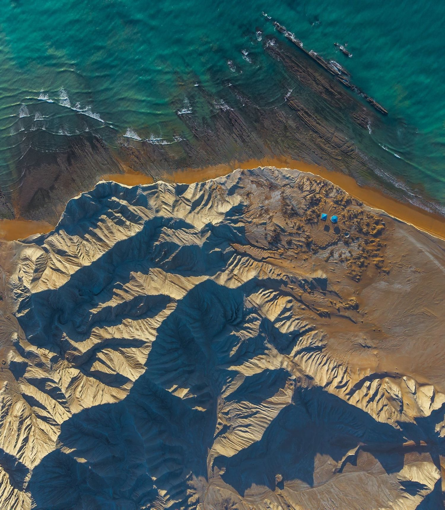
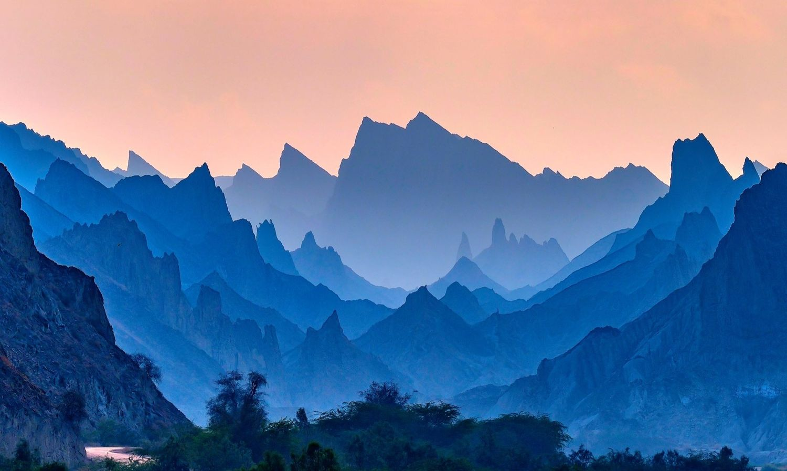
Where the desert meets a turquoise sea
Then the badlands break open and there it is: the sea. Kund Malir is the beach every photograph of this coast has promised — golden sand, water in impossible greens and blues, the desert mountains falling straight into the surf. I flew the drone at mid-morning, when the high sun turns the shallows to stained glass and a single truck on a kilometre of empty sand becomes the only thing in the frame.
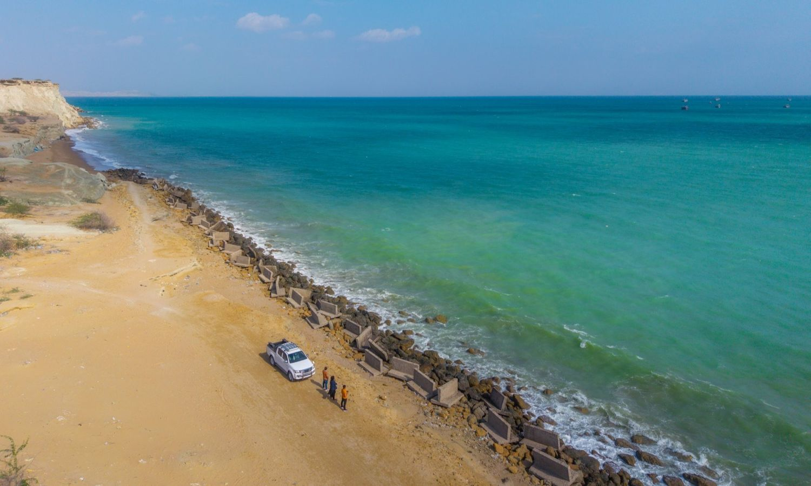
A fishing harbour and a twilight moon
Further west lies Pasni, a working fishing harbour and the launch point for Astola Island, Pakistan's largest offshore island — a protected sanctuary of green turtles, sea snakes and nesting birds. I lingered into the blue hour, when the tide pulled back over the black reef and the sky turned to plum and rose beneath a rising moon.
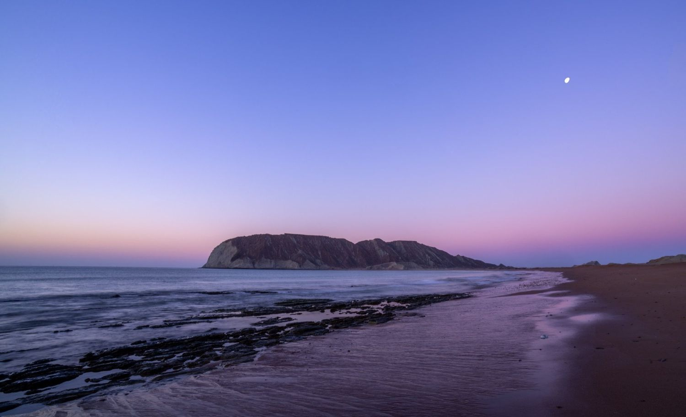
Cliffs, a deep-water port, and the finest sunsets on the coast
Gwadar is the beating heart of the modern Makran coast — a deep-water port on a hammerhead peninsula beneath the long ridge of Koh-e-Batil. We stayed up on the hill at PC Gwadar, the two great bays falling away on either side. Climb the western cliffs at evening and the Arabian Sea opens out gold to the horizon, silent but for the wind.
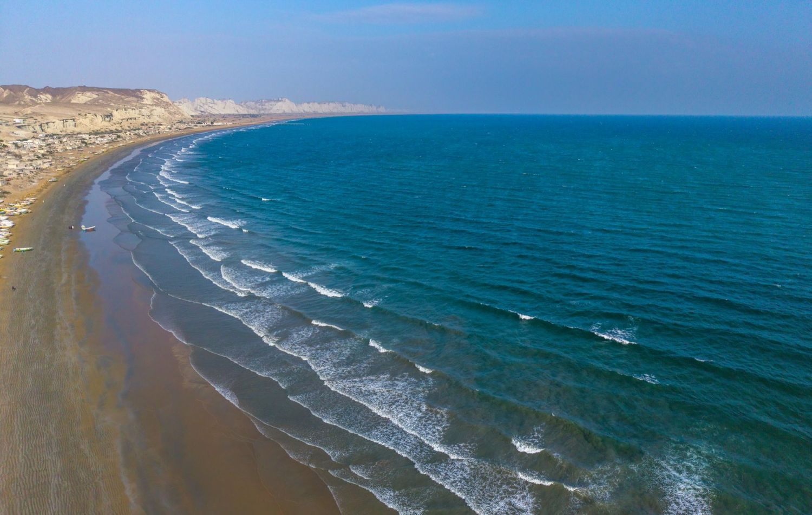
"This is the light I drove five thousand kilometres for."
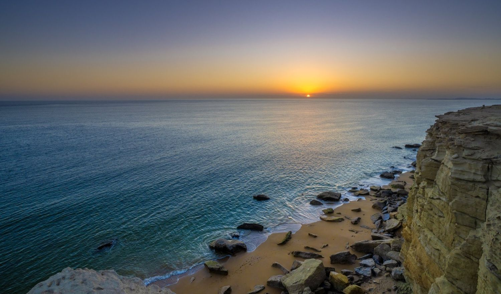
A hammerhead mountain over the sea
West of Gwadar the highway reaches Pishukan — a fishing town and a long, quiet beach sheltered beneath a dramatic flat-topped headland, a hammerhead peninsula that juts into the sea and glows rose-gold at dusk. From the air the bay reads as four clean bands of colour: desert, cliff, sand and turquoise water.
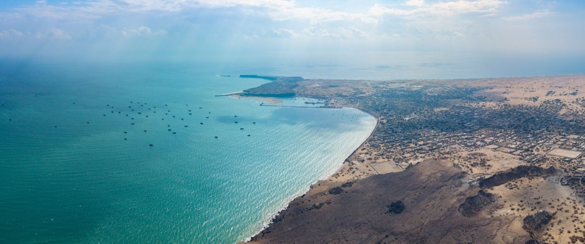
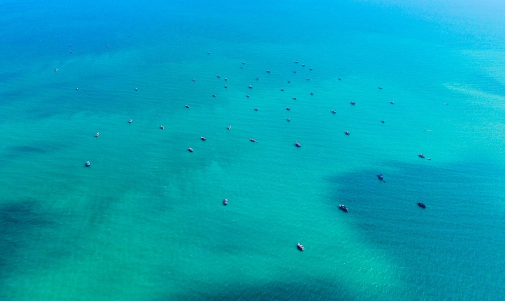
Where the badlands run into the sea
A little further on lies Ganz Beach, where orange and white eroded badlands run straight into the deep blue of the Arabian Sea. Low pale cliffs stand over the water like the ramparts of a fort, and from their edge the sea opens out to the horizon — one of the most striking meetings of desert and ocean on the entire coast.
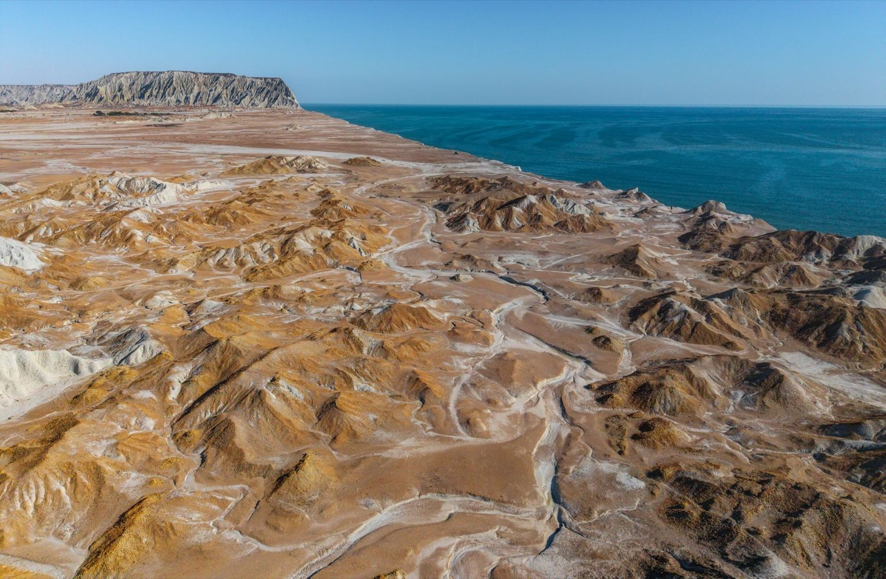
To the edge of Iran
The road ends at Jiwani, a small windblown town on Gwadar Bay just fifteen kilometres from the Iranian border at Gabd — the very edge of the Pakistani coast, where the highway effectively runs out and the frontier begins. Jiwani holds some of the healthiest mangrove forests on the coast, and on its headland the ruins of a British WWII airfield still stand.
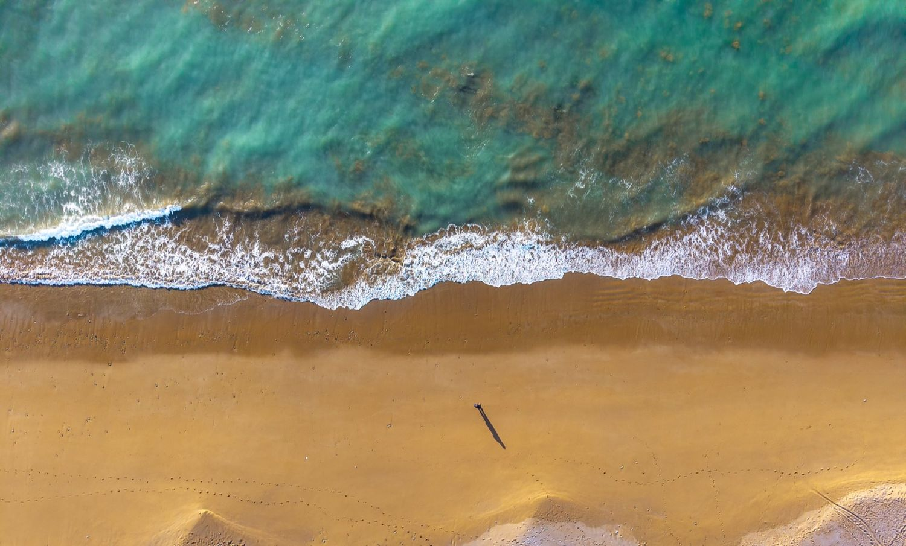
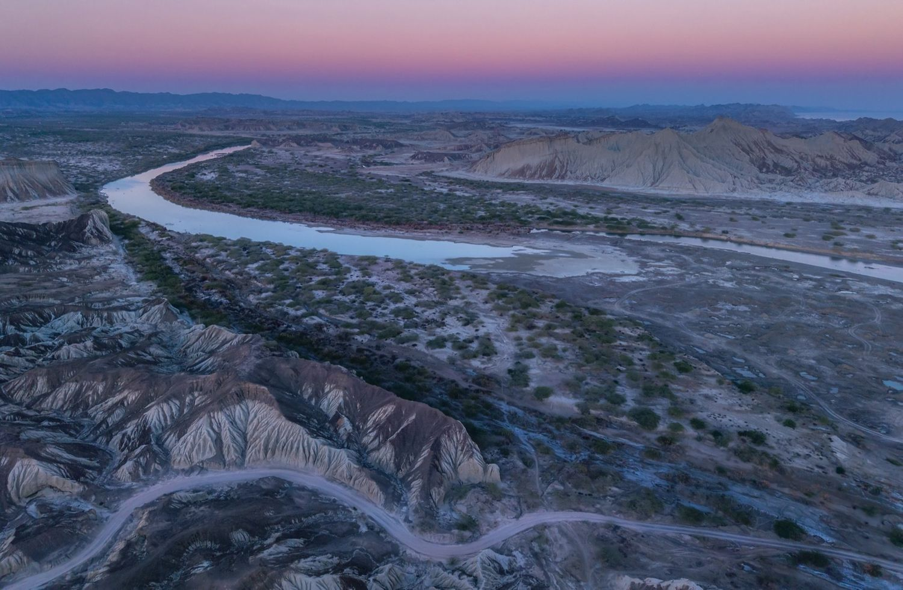